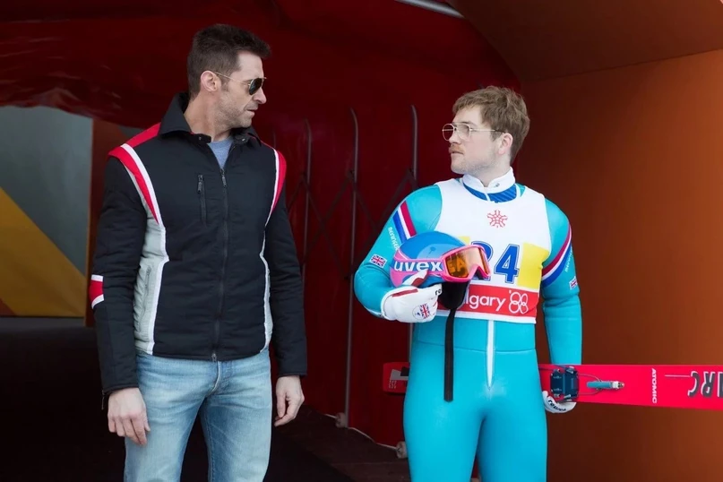

Тимур Ахмедов рассказывает о том, как складывался творческий путь Декстера Флетчера. И заодно объясняет, почему вам точно стоит глянуть четыре с половиной фильма, срежиссированных Мылом из нетленочки Гая Ричи про карты, деньги и два ствола
Для многих Декстер Флетчер начался одновременно с Гаем Ричи — все помнят Мыло и его ножи. В 1999-м низкобюджетные «Карты, деньги, два ствола» прогремели на весь мир, с годами превратившись в культовый фильм. Ричи стал успешным британским режиссером, а четверка главных героев подарила нам с десяток крылатых цитат.

Но если Ричи в 1999-м только дебютировал, то Флетчер снимался в кино уже добрых 20 лет. Он начал как детский актер еще в конце 70-х: дебютировал в гангстерской пародии «Багси Мэлоун», появился у Линча в «Человеке-слоне». В середине 80-х подросший Флетчер сыграл Караваджо в одноименной картине Дерека Джармена вместе с Шоном Бином и Тильдой Суинтон. После он появлялся в таких фильмах, как «Извращенная одержимость» и «Иуда». Флетчер редко получал главные роли, но попадал в интересное кино.
Вдобавок к актерству Декстер успел поработать телеведущим, попробовать себя в озвучке и даже сняться в клипе Кайли Миноуг. Гай Ричи, конечно, набирал людей с улицы, но к Флетчеру это не относилось.
По иронии судьбы большой звездой из четверки «Двух стволов» суждено было стать именно «парню с улицы» — Джейсону Стэтхэму. Флетчер, по сравнению с ним, в 2000-х снимался нечасто, да и масштаб фильмов не сравнить. Но зато он продолжил сотрудничать с продюсером Гая Ричи Мэттью Воном, сыграв в «Слоеном торте» и «Звездной пыли».
Это знакомство пригодится, когда Флетчер сам возьмется за режиссуру: Вон будет продюсировать фильмы Декстера и поможет ему адаптироваться в индустрии массового кинематографа. Но произойдет это не сразу. Для начала Флетчер, как и положено, начнет с независимых фильмов и низких бюджетов.

«Дикий Билл»
Флетчер работал над различными сценариями с начала нулевых. Поначалу он думал объединиться со старым товарищем Джейсоном Флемингом (Толстый Том из «Двух стволов»), который мог выступить продюсером его первого фильма. Но когда дебют стал возможен, Флеминг оказался занят на съемках.
В итоге Декстер познакомился с Тимом Коулом и Сэмом Тромансом — продюсерами, которые где-то раздобыли 700 000 фунтов бюджета. Сценарий Флетчер довел до ума вместе с английским писателем Дэнни Кингом. Главную роль получил малоизвестный Чарли Крид-Майлз, а на роли второго плана, напротив, утвердились известные друзья Флетчера, которые всячески поддерживали дебют — Энди Серкис (Голлум из «Властелина колец»), Оливия Уильямс (Бетти Дьюри из «Секса, наркотиков и рок-н-ролла») и Лео Грегори (стукач из «Хулиганов Зеленой улицы»). У начинающего режиссера собрался талантливый каст, вооруженный натуральным английским акцентом — чисто британская атмосфера была обеспечена. Премьера прошла в 2011-м, фильм получил хорошую критику.

«Дикий Билл» — тот частый случай, когда трейлер идет мимо сути. По ролику это — гангстерское кино про отморозка, откинувшегося с зоны ради денег, секса и разборок. Добавляем оформление в стиле «Рок-н-рольщика», саундтрек из него же (Black Strobe — I Am а Man), и выходит, что Флетчер пошел по стопам Гая Ричи.
На самом деле «Дикий Билл» получился хорошей честной драмой. Это история про несчастную семью, живущую в нехорошем районе Лондона без особых перспектив на перемены. В фильме хватает черной комедии, но на Ричи это не похоже. Оно и понятно — Флетчер вообще вдохновлялся Кустурицей.
Он рассказывает, не опуская подробностей, что позже станет одной из фишек его «Рокетмена». В «Диком Билле» отец-уголовник отказывается от опеки над детьми, мать сваливает в Испанию, дети продают наркотики, подростки незаконно работают на стройке. Все плохо. При этом честность не превращается в чернуху. Фильм скорее грустно иронизирует над дерьмовой долей своих героев и оставляет им шанс на счастье.
Ну а крутая операторская работа временами рисует сногсшибательный фон.

«Солнце над Литом»
Спустя два года Флетчер резко меняет настроение. «Солнце над Литом» — это добрейший мюзикл, поставленный по одноименной пьесе на музыку шотландских фолк-рокеров The Proclaimers (братья-близнецы Чарли и Крэйг Риды). Они обеспечили режиссеру полную творческую свободу. Так и сказали: «Делай с нашими песнями что хочешь». В итоге в фильме прозвучало 14 композиций, саранжированных специально для мюзикла. Основу репертуара составил альбом 88-го года Sunshine on Leith. По мнению братьев Ридов, актеры спели даже лучше, чем они сами.
Надо понимать, что Флетчер снимал «Солнце над Литом» за три года до выхода «Ла-Ла Ленда». В 2016-м Дэмьен Шазелл доказал кинообщественности, что мюзикл все еще актуален. До этого работать с подобным жанром было рискованно, особенно для недавнего дебютанта. Почти гарантированный провал в прокате. Но Декстер взял и снял. И собрал нормальную кассу при маленьком бюджете.
«Солнце над Литом» — история одной семьи. С кучей красивых картинок Эдинбурга и романтики. Шотландские атрибуты тоже на месте: килты, пьяные песни, футбол, разговоры о котором традиционно для британского кино переполнены иронией. Любимая команда постоянно проигрывает:
— У меня была мечта — жениться на тебе, завести детей и увидеть «Хиберниан» чемпионом Шотландии.
— И как, все сбылось?
— Два из трех. Неплохо.
Это один из тех фильмов, во время просмотра которых улыбаешься, как идиот. Все наивно и мелодично. Мюзикл и так превращает бытовуху в сказку, а тут еще и поют с шотландским акцентом. «Солнце над Литом» — это все равно что смотреть на котят. Можно притворяться безразличным, но от умиления не спасешься.
«Эдди «Орел»
Сделав два разных независимых фильма, Декстер Флетчер получил шанс поработать с большим бюджетом. С «Эдди Орла» началось сотрудничество Флетчера-режиссера и Мэттью Вона. Последний к 2016-му уже приобрел статус влиятельного продюсера.
Вон недавно выстрелил первым «Кингсменом» с Тэроном Эджертоном и закономерно пригласил парня в свой новый проект. Солировать на пару с Эджертоном он назначил самого дружелюбного мужика на свете — Хью Джекмана. Мэттью Вон не только обеспечил Флетчеру хороших актеров, но и как старый товарищ мог прямо указать на все косяки. Или поговорить за режиссера с воротилами 20th Century Fox. Помог серьезно, короче говоря.

«Эдди «Орел» — это байопик про первого за кучу лет английского олимпийца в лыжных прыжках с трамплина. Реальная история про мечтателя-чудака, который представлял свою страну в одиночестве, занял последнее место и влюбил в себя всю Британию. Тэрон Эджертон щурится и неуклюже стоит на лыжах, а Хью Джекман харизматично бухает и тренирует будущую звезду телеэкранов. Настоящий Эдди считает, что в фильме слишком много вымысла. Флетчер же говорит, что не стремился к достоверности — он просто хотел сделать легкое и захватывающее кино. В обиде никто не остался.
Здесь о режиссерском почерке говорить трудно — фильм все-таки массовый. Многое построено на штампах в духе «давайте сделаем это!», сюжет не поражает оригинальностью. Тем не менее это кино смотрится хорошо, подкупая стилистикой в духе 80-х. Ну и Джекман бухой — тоже дело хорошее. «Эдди» получил неплохую критику: 82 балла на Rotten Tomatoes, 54 из 100 на Metacritic, номинация от Empire на «лучший британский фильм». С премьерой на «Санденсе» 2016-го для Декстера Флетчера стартовала большая режиссерская карьера.
«Богемская рапсодия» / «Рокетмен»
Декстер Флетчер должен был ставить «Богемскую рапсодию» с самого начала, но потом продюсеры отдали предпочтение Брайану Сингеру. Учитывая, каким у Флетчера получился «Рокетмен», даже жаль, что так вышло. У Сингера получилось скучно.
Флетчера позвали на помощь, когда Сингер был уволен за прогулы. Декстеру отвели только концовку съемок, так что о его влиянии на финальный метр говорить трудно. По правилам Гильдии режиссеров Америки он даже не значится режиссером: выбрать можно только одного человека. Сингер сделал большую часть фильма — его имя и указано в титрах.
Имя Флетчера как полноправного режиссера прогремело уже через год. На контрасте с «Богемской Рапсодией» «Рокетмен» бьет прямо по морде. Элтон Джон исповедовался, а Декстер не собирался ни о чем молчать. Он показал на экране не только общеизвестные события, но и то, что Элтон чувствовал в конкретной жизненной ситуации: хоть мальчиком за пианино, хоть обдолбанным мужиком на дне бассейна. «Рокетмен» получился рассказом от первого лица, а не взглядом со стороны.

Это скорее фантазия, основанная на реальности. Флетчер отталкивался от воспоминаний Элтона, которые не гарантировали достоверности: слишком много было бухла и наркотиков. Искаженную память своего героя Флетчер приправил кучей крутых визуальных эффектов, а зритель смог посмотреть на все фантазии и галлюцинации рок-звезды изнутри. Этот фильм Флетчера объединил в себе честность «Дикого Билла», музыкальность «Солнца над Литом» и вольно рассказанную биографию, как в «Эдди Орле». В 2019-м Флетчер пробился на самую вершину.
Неудивительно, что он не сидит без работы. На 2021-й запланирована новая часть «Шерлока» с Дауни и Джудом Лоу, снимать ее будет Флетчер. Спустя 20 лет он вернулся к Ричи, чтобы в его же франшизе сменить его в режиссерском кресле.